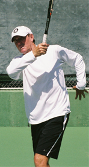
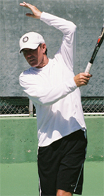
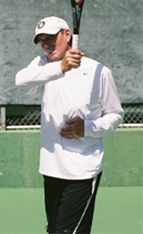

← Bài trước: The One Handed Backhand - The Essential Non-Dominant Hand | 🏠 Classic Lessons Trang chủ | Bài tiếp: → The Opposite Arm - Other Strokes - Part 2
Cú trái tay: Cú đánh đất
Thư viện kiến thức quần vợt thống nhất — Cơ bản, Phân tích kỹ thuật, Thư viện tham khảo và nhiều hơn nữa
Cú trái tay: Cú đánh đất
Phần 1
Scott Murphy
Không phải là tay cầm vợt, nhưng tay không vợt lại tạo ra sự khác biệt trong cú đánh.
Là một huấn luyện viên dạy học, tôi luôn tò mò về những gì các tay vợt mới làm với tay không vợt trong các cú đánh của họ. Đối với nhiều tay vợt chưa tự nhiên thuần thục hoặc chưa được cung cấp thông tin tốt, vai trò của tay không vợt thường bị bỏ qua. Tay vợt không có quyết định chủ ý để sử dụng sai tay không vợt, nhưng sau tất cả, nó không phải là việc đánh vợt nên sự khác biệt là gì? Nhưng nếu bạn quan sát các tay vợt giỏi hơn, bạn sẽ bắt đầu hiểu rằng sự khác biệt có thể rất lớn về cơ học cú đánh, cân bằng, thời gian và kiểm soát.
Sử dụng đúng tay không vợt là một yếu tố quan trọng trong việc phát triển các cú đánh đất liền mượt mà và mạnh mẽ. Sử dụng không đúng sẽ tạo ra những lực không có lợi, ngăn cản việc sản xuất cú đánh tự tin. Di chuyển không đúng tay không vợt sẽ không nhất thiết ngăn cản việc đánh bóng, nhưng chất lượng của cú đánh thường sẽ bị ảnh hưởng.
Tay không vợt giữ vợt rồi thả và chỉ vào bên ngoài cơ thể.
Tôi không thể nói được bao nhiêu lần tôi đã thấy các học viên ngạc nhiên khi được chỉ cách sử dụng đúng tay không vợt của họ. Bạn có biết tay không vợt của mình làm gì trong các cú đánh của mình không? Chắc chắn một chuyên gia có thể nói cho bạn, nhưng điều tuyệt vời là xem bản thân mình trên video để mắt của bạn có hình ảnh rõ ràng hơn về những gì cần thiết để thay đổi tích cực. Sau khi bạn đã làm điều đó, hãy xem cách bạn phù hợp với những suy nghĩ trong bài viết này. Trong Phần 1 tháng này, tôi sẽ thảo luận về vai trò của tay không vợt liên quan đến các cú đánh đất liền. Trong Phần 2, chúng ta sẽ xem xét về cú giao bóng, cú trả giao bóng, cú bắt lưới và cú đập bóng.
Xoay và thả
Hãy bắt đầu với cú đánh mà tôi nói là có nhiều biến thể không đúng về tay không vợt nhất: cú thuận tay (forehand). (Lưu ý: tất cả các mô tả đều dành cho tay phải). Điều này một phần là vì có nhiều di chuyển tay không vợt hơn trên cú thuận tay so với cú trái tay. Một yếu tố khác là sự đa dạng của các mẫu đánh và biến thể kết thúc. Nhưng bất kể kiểu nắm vợt hoặc mẫu đánh cụ thể nào, cánh tay và bàn tay của tay vợt hàng đầu ngày nay làm việc hợp tác.
Xe đua dẫn đường mở đường và xe đua theo sau.
Trong vị trí sẵn sàng, tay không vợt ôm cổ vợt để giảm áp lực khỏi cánh tay đánh và giúp đổi nắm vợt nếu cần. Trong giai đoạn mở vợt ra sau (backswing) hoặc "quấn" (coiling), tay không vợt vẫn ở cổ vợt khi cả hai cánh tay bắt đầu di chuyển sang bên. Tay thả ở khoảng điểm cánh tay trái song song với mạng, chỉ thẳng vào bên.
Đối với một số tay vợt, tay trái cũng có thể ở đó một chút lâu hơn. Nếu mẫu đánh được thời gian tốt, vào lúc gần như ngay khi tay không vợt rời đi, cánh tay trái hoàn toàn mở rộng song song với mạng. Sau đó nó thả lại bên ngoài cơ thể. Đồng thời, cánh tay đánh hoàn thành mở vợt ra sau và sau đó là cú đánh về phía trước.
Tôi luôn so sánh điều này với tình huống "xe đua dẫn đường và xe đua". Cánh tay trái là xe đua dẫn đường, và cánh tay đánh là xe đua. Cánh tay trái bắt đầu cho cánh tay phải trên đường đi và sau đó nói, "Theo tôi!". Điều quan trọng là lưu ý đường đi và hình dạng của tay không vợt. Thông thường, góc của cánh tay sẽ giảm một chút ở đầu giai đoạn đánh về phía trước. Nó sẽ bắt đầu đi về phía trước và bên ngoài cơ thể, vẽ cung mà cánh tay đánh sẽ theo dõi.
Khi tay không vợt di chuyển, gối sẽ bắt đầu uốn vào trong thân, cuối cùng đạt góc 90 độ hoặc gần đó. Bây giờ cả tay không vợt sẽ bắt đầu nâng lên. Trong kết thúc cổ điển, cánh tay trên sẽ di chuyển lên trên cho đến khi nó gần như song song với vai. Đồng thời, cánh tay dưới sẽ xoay lên trên cho đến khi nó chỉ thẳng lên và xuống.
Tay không vợt vẽ cung của cánh tay đánh trong phạm vi kết thúc.
Vị trí này cho phép tay vợt "bắt" vợt với tay trái, một phương pháp dạy và luyện tập đã được thử và chứng minh để giúp tay vợt phát triển kết thúc. Bạn không thấy nhiều tay vợt hàng đầu làm điều này trong trận đấu, mặc dù nó thường thấy hơn trong các buổi ấm nóng. Nhưng nếu bạn xem một tay vợt như Agassi trong trận đấu thực tế, trên nhiều quả bóng, tay không vợt và bàn tay của anh ấy thực sự ở vị trí bắt hoặc rất gần vị trí đó. Không phải là việc bắt chính nó quan trọng. Mà là vị trí của tay không vợt liên quan đến mẫu đánh và di chuyển của vợt.
Vị trí "bắt" này tương quan với các kết thúc cổ điển hơn vai. Nhưng chúng ta biết rằng trong trò chơi hiện đại, có nhiều biến thể khác của cú thuận tay. Vị trí của tay không vợt sẽ thay đổi tùy theo kết thúc của vợt. Tùy thuộc vào nắm vợt và/hoặc loại cú đánh tay vợt đang đánh, tay không vợt có thể kết thúc xung quanh vai, dưới hông hoặc ở giữa.
Điểm thú vị là trong tất cả các trường hợp, tay không vợt và cánh tay vẽ cung của vợt. Ngoài ra, tay không vợt luôn ở dưới mức vợt, ngay cả trên các kết thúc bên ngoài cơ thể cực đoan. Giống như kết thúc cổ điển hơn vai, gối uốn và thu vào trong, nhưng cánh tay nâng lên tỷ lệ với chiều cao của cánh tay đánh trong kết thúc.
Thay vì chỉ thẳng lên như với kết thúc cổ điển hơn vai, trên các kết thúc thấp hơn, cánh tay dưới chỉ thẳng lên một phần hoặc chỉ thẳng về phía trước. Tất cả đều phụ thuộc vào chiều cao của vợt. Lại một lần nữa, đó là khái niệm "xe đua dẫn đường và xe đua". Tay không vợt sẽ vẽ cung tương tự như đường đi của vợt đến.
Nói hết những điều đó, nếu bạn gặp khó khăn với động tác tay không vợt, nơi để bắt đầu là với kết thúc đơn giản nhất. Học cách "bắt" có thể giải quyết hầu hết các vấn đề tay không vợt của học viên. Bắt cho bạn cảm giác cách cánh tay làm việc cùng nhau và các đường đi liên quan của chúng trên cơ thể. Một khi bạn có cảm giác tốt hơn về đường đi của tay không vợt liên quan đến vợt, bạn có thể tìm thấy mình có thể phát triển các kết thúc khác với cánh tay hoàn hảo đồng bộ.
Phát triển nhịp điệu của việc quấn và tháo với các cú đánh bóng bóng.
Vấn đề
Vậy những cách sử dụng tay không vợt không đúng trên cú thuận tay là gì? Theo kinh nghiệm của tôi, tay vợt có xu hướng để tay không vợt rơi xuống, di chuyển nó sang bên trái của cơ thể, hoặc thậm chí để cánh tay trái ở bên ngoài cơ thể quá lâu. Với cánh tay trái treo ở bên, khả năng là sẽ có một quấn không đủ và do đó một cú đánh được sản xuất chủ yếu từ cánh tay phải và không phải từ bên phải. Cú đánh sẽ không mượt mà và kết quả là những gì tôi gọi là cú thuận tay "đánh bay".
Một số ví dụ về cách tay không vợt có thể cản trở cú đánh.
Nếu cánh tay di chuyển sang bên trái của cơ thể, bạn thấy một ví dụ về định luật thứ ba của Newton. Đối với mỗi hành động, có một phản ứng bằng và ngược lại. Khi vợt cố gắng đi về phía trước, cánh tay trái cắt qua cơ thể tạo ra một chặn trên cú đánh về phía trước.
Một vấn đề khác có thể xảy ra từ việc để cánh tay trái ở bên ngoài cơ thể quá lâu. Cánh tay trái có thể thực sự trở thành trở ngại. Đường đi của cú đánh về phía trước sẽ bị chặn và bạn sẽ buộc phải "cánh tay" cú đánh. Đây là nơi mà việc biết cung hoặc đường đi của tay không vợt trong cú đánh về phía trước phát huy tác dụng.
Một vấn đề nhỏ hơn xảy ra khi tay vợt chỉ cánh tay trái thẳng về phía trước khi bóng đến. Điều này thường được dạy, nhưng không phải là những gì các tay vợt giỏi thực sự làm. Nó không thảm hại như những lỗi khác có thể xảy ra, nhưng nó hạn chế quấn so với khi tay không vợt ở vợt và mở rộng qua cơ thể. Chỉ thẳng về phía trước cũng có thể hoạt động như một nam châm để hút bóng đến gần cơ thể.
Về thời gian thả tay không vợt, hãy thực hành toàn bộ quá trình quấn và tháo, đầu tiên với các cú đánh bóng bóng. Có một cảm giác và nhịp điệu nhất định trong việc đánh như vậy mà trở nên lây nhiễm. Hãy nhớ rằng thời gian của cú đánh về phía trước nên như vậy mà mặt phẳng của vai hướng về mục tiêu tại điểm tiếp xúc hoặc hơi đóng tùy thuộc vào nắm vợt.
Nếu tay không vợt thả quá sớm, bạn sẽ xoay quá sớm và vợt sẽ kéo quá xa sau vai. Từ các cú đánh bóng bóng, tiến đến đánh các quả bóng di chuyển chậm và sau đó đến các quả bóng ở tốc độ bình thường, trong khi đó luôn nhấn mạnh vào dòng chảy của mô hình mới.




4 kết thúc phổ biến với vị trí tay không vợt không đúng.
Một trong những vấn đề lớn nhất tôi thấy từ các tay vợt hàng ngày là họ đến gần bóng quá, làm hẹp khu vực đánh của họ. Với điều đó, tôi có học viên của mình mô phỏng thế đứng mở hoặc vuông tại điểm mà tay không vợt hoàn toàn mở rộng. Tôi sẽ ném cho họ một quả bóng để bắt trong khi cánh tay ở vị trí đó, hoặc có họ đánh và đánh một quả bóng từ điểm đó để minh họa khoảng cách bên trái tốt nhất để thiết lập khu vực đánh cú thuận tay. Do đó, tay không vợt cũng trở thành một công cụ đo lường hiệu quả.
Bắt bóng với cánh tay mở rộng bên trái chữa khỏi xu hướng đến gần bóng.
Trong một số trường hợp, ngay cả khi tay không vợt bắt đầu tốt, nó có thể đi sai khi cú đánh về phía trước phát triển, can thiệp vào dòng chảy của cú đánh. Các biến thể của điều này bao gồm ném cánh tay lên, góc cánh tay xuống, giữ cánh tay dưới ở vị trí kết thúc, và giữ nó chống lại phần giữa cơ thể. Như chúng ta đã thảo luận ở trên, một trong những phương pháp đã được thử và chứng minh để sửa những thói quen này là có tay vợt bắt kết thúc của họ; đó là, đặt cổ vợt vào tay không vợt. Chỉ cần thực hành cú đánh chậm trong khi chú ý đến những gì cánh tay đó đang làm trên đường đến bắt kết thúc.
Cú trái tay
Mặc dù có ít di chuyển và phức tạp hơn, tay không vợt cũng là một thành phần quan trọng trong việc đánh cả cú trái tay một tay và hai tay.
Sử dụng tay không vợt để đổi nắm vợt và chuẩn bị cú trái tay một tay.
Trên cú trái tay một tay, xoáy cuộn hoặc cắt bóng, giống như cú thuận tay, tay không vợt ở cao trên cổ vợt và giúp đổi nắm vợt nếu cần, đồng thời giúp kéo vợt về phía sau. Sau đó, bất kể mẫu đánh của bạn là thẳng về phía sau, vòng hoặc cắt, tay không vợt ở trên cổ vợt cho đến khi bắt đầu cú đánh về phía trước tách nó ra khỏi nắm của bạn. Khi cánh tay đánh di chuyển theo hướng mục tiêu, tay không vợt di chuyển đồng thời theo hướng ngược lại.
Tay không vợt di chuyển về phía sau và kết thúc ở các chiều cao khác nhau tùy thuộc vào xoáy.
Tay không vợt và vai không nên xoay quanh với bắt đầu của cú đánh về phía trước. Bằng cách làm đối trọng, chúng cung cấp thêm sức mạnh cho vai đánh để kéo và đánh cú đánh theo đường thẳng trực tiếp đến mục tiêu. Nói cách khác, bạn muốn mặt phẳng của vai song song nhất có thể với mục tiêu tại điểm tiếp xúc. Điều quan trọng là lưu ý rằng nếu bạn đang đánh cú trái tay xoáy cuộn, tay không vợt thả rồi di chuyển về phía sau và xuống khoảng mức hông.
Trên cú trái tay cắt bóng, tay không vợt di chuyển về phía sau nhiều hơn theo mặt phẳng của cú đánh về phía trước, kết thúc chỉ một chút thấp hơn tay đánh. Những kết thúc này giúp tạo ra cân bằng tương đối với các cú đánh khác nhau. Nếu bạn xem các hoạt ảnh, bạn có thể thấy rằng cánh tay đi về phía sau trên cả hai, nhưng cũng là các đường và vị trí kết thúc khác nhau.
Cú trái tay hai tay
Trong trường hợp của cú trái tay hai tay, cánh tay thứ hai tốt hơn được gọi là cánh tay không chủ đạo vì nó ở trên vợt suốt. Cú trái tay hai tay luôn là, theo suy nghĩ của tôi, một phần nào đó là cú thuận tay ở phía sau. Cấu hình cánh tay tại điểm tiếp xúc của uốn/uốn, uốn/thẳng và thẳng/thẳng không thay đổi thực tế rằng cánh tay chủ đạo cần tự do để kéo qua cú đánh và mở rộng tại kết thúc như trên cú thuận tay.
Bất kể cấu hình chính xác tại điểm tiếp xúc, cánh tay không chủ đạo cần tự do để kéo qua cú đánh.
Vấn đề lớn nhất tôi thấy với hai tay là vì nhiều lý do mà họ để gối của cánh tay không chủ đạo ở trên hông tương ứng. Điều này có tác động ngay lập tức đến chiều dài của cú đánh và, thực tế, buộc phải có các đường đi bị chặn hoặc vòng quanh. Hãy tưởng tượng bạn đang đánh cú thuận tay với gối của bạn được ghim vào hông. Không tốt!
Vấn đề lớn nhất của cánh tay không chủ đạo với hai tay - gối ở trên hông.
Mức độ gối của cánh tay không chủ đạo thả và mở rộng sẽ thay đổi dựa trên cú đánh được gọi. Từ phía sau sân, chiều cao của gối của cánh tay không chủ đạo dao động từ giữa ngực đến vai vì điều này cho phép chiều dài của cú đánh lớn hơn được gọi từ khoảng cách đó. Vị trí của gối của cánh tay không chủ đạo sẽ thấp hơn khi tay vợt đến gần mạng vì không có nhiều sân để làm việc.
Hai nguyên nhân chính gây ra gối của cánh tay không chủ đạo ở trên hông là đến gần bóng và thời gian của cú đánh về phía trước muộn. Trong cả hai trường hợp, gối của cánh tay không chủ đạo sẽ được ghim vào hông. Để tránh đến gần bóng quá trên cú trái tay hai tay, tôi thích có học viên của mình đi theo phía xa hơn vì nói chung, họ tự nhiên muốn ở ngay nơi bóng khi họ đánh nó.

Sử dụng chân ngoài làm thước đo trong thế đứng mở giảm đến gần bóng.
Tôi đã tìm ra rằng rất thường xuyên khi một người đến gần bóng quen thuộc cảm thấy như mình sẽ ở xa quá, thực tế là họ ở đúng nơi họ nên ở. Trong mọi trường hợp, tốt hơn là làm việc để đóng một khoảng cách hơn là không có khoảng cách nào cả.
Tôi cũng thích có tay vợt sử dụng chân ngoài làm thước đo. Nếu ý định là đánh từ thế đứng mở hoặc mở, bóng nên đánh đến bên ngoài chân đó (chân trái cho tay phải). Nếu họ bắt đầu với tiền đề đó và bước vào, miễn là họ không đóng thế đứng quá nhiều, vẫn còn đủ không gian. Nếu bạn sử dụng thế đứng đóng, hãy chắc chắn để lại đủ không gian để hấp thụ không gian được lấy bởi bước chéo.
Nhiều tay vợt muộn trên cú trái tay hai tay vì lý do đơn giản là họ có thể làm được điều đó vì họ mạnh hơn rất nhiều với cả hai tay. Tôi sẽ viết một bài viết toàn bộ về vai trò quan trọng của thời gian và cách phát triển nó, nhưng hãy nói cho bây giờ rằng bóng nên tiếp xúc ở phía trước trọng tâm của bạn.
Thời gian tiếp xúc trên cú trái tay hai tay để ở phía trước trọng tâm của bạn.
Khi bạn bước vào cú trái tay, hãy thực hành sử dụng đường tưởng tượng song song với bước đó làm hướng dẫn cho tiếp xúc với bóng. Trong thế đứng mở, đường được tạo ra bởi chân trước cũng đại diện cho một thời gian tiếp xúc tốt. Một khi bạn thiết lập khu vực đánh đúng và thời gian tốt nhất liên tục, cả hai cánh tay sẽ lưu thông qua cú trái tay hai tay.
Đó là tất cả về các cú đánh đất liền. Trong Phần 2, tôi sẽ nói về tay không vợt liên quan đến cú giao bóng, cú đập bóng, cú trả giao bóng và cú bắt lưới.

Scott Murphy đến từ Marin County, California, nơi anh bắt đầu chơi quần vợt từ tuổi 5 trong một gia đình yêu thích quần vợt. Cả hai bố mẹ của anh đều là những người ảnh hưởng lớn trong sự phát triển của anh. Anh cũng nhận được sự hướng dẫn từ huyền thoại Marin Hal Wagner và cựu tay vợt top 10 Harry Roach. Scott là cựu sinh viên của Đại học California tại Berkeley, nơi anh chơi bóng chày và bóng đá, nhưng vẫn tiếp tục làm việc trên trò chơi quần vợt của mình với huấn luyện viên nổi tiếng Chet Murphy.
Ông là huấn luyện viên trưởng tại Câu lạc bộ Tennis San Domenico/Sleepy Hollow trong hơn 20 năm. Ông cũng đã chỉ đạo Trại Tennis Nike Tahoe tại Khách sạn Granlibakken trong 10 năm. Scott hiện đang dạy học riêng tại Ross, Marin County và vào mùa hè, ông chỉ đạo Học viện Tennis Tuscan mà ông đã thành lập tại Quarrata, Ý.
Xem trang web của Scott tại scottmurphytennis.net
Bạn có thể liên hệ trực tiếp với Scott qua: scottmrph@yahoo.com
Nguồn: tennisplayer.net lưu trữ — The Opposite Arm - Ground strokes - Part 1.docx (Thư viện dạy học của John Yandell, 2002-2022). Đã được trích xuất và chuyển đổi sang HTML cho Tennis Future Lab.